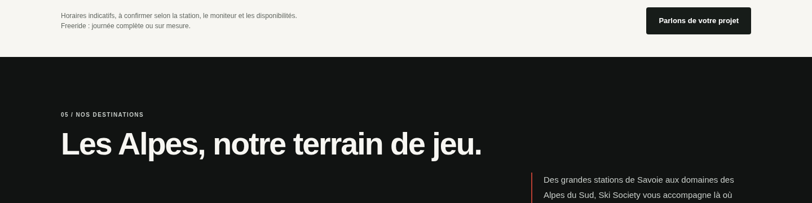
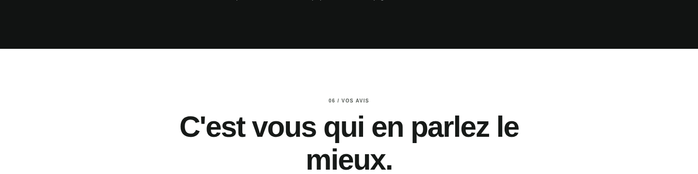
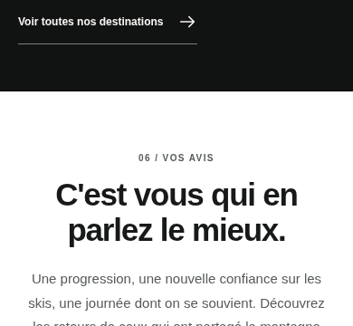
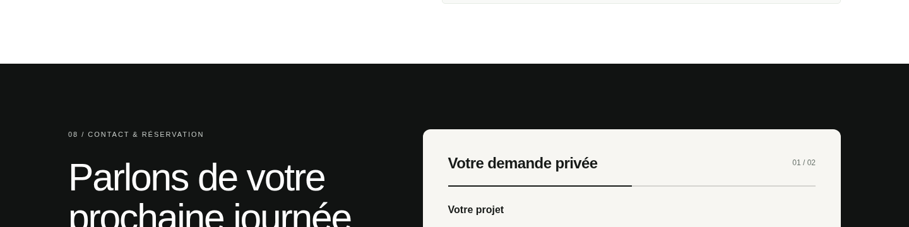
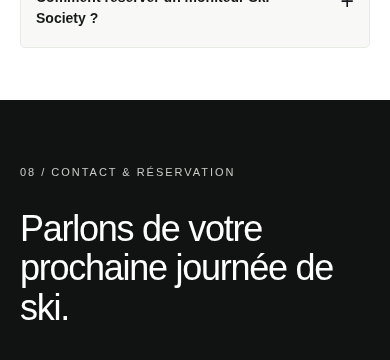
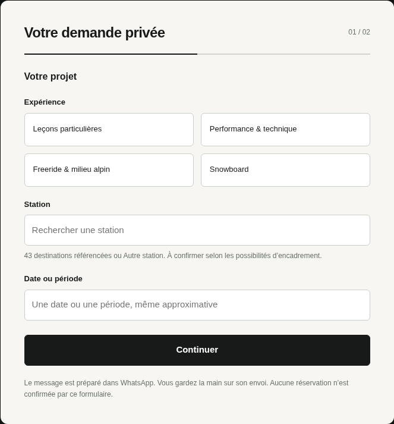
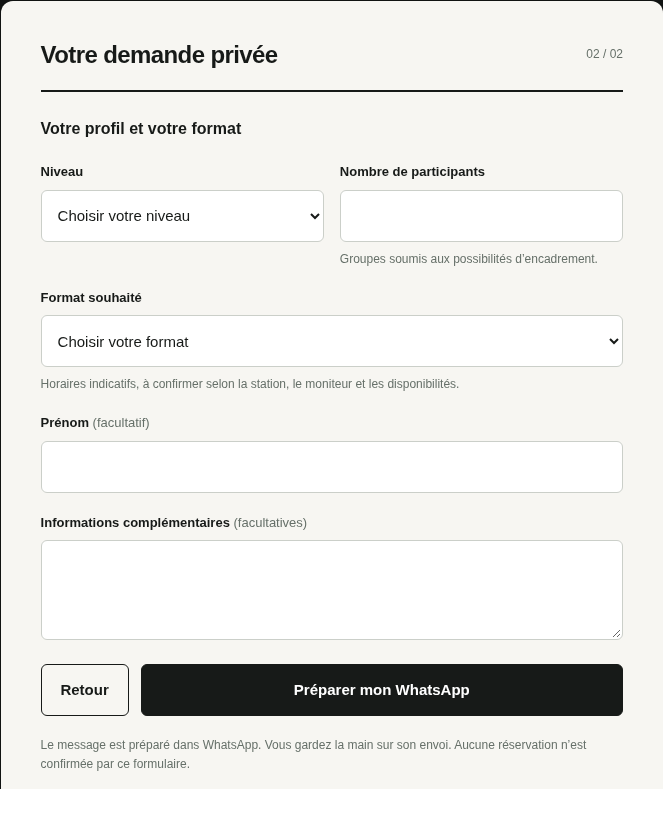
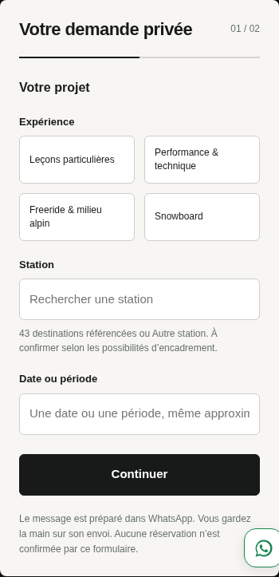
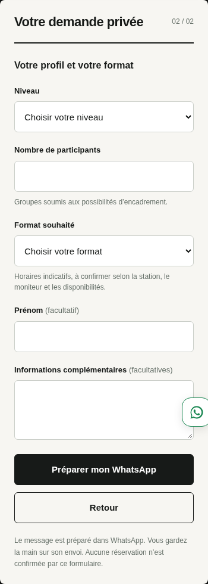

Fonds pleine largeur et réservation privée
Une proposition pour l’accueil : clair → Destinations sombre → Avis/FAQ blancs → Réservation et footer sombres. Référence : 23821ca.
Photos et polices distantes bloquées par le proxy. Les captures permettent de vérifier les compositions, les fonds et les états fonctionnels. La validation avec les ressources photographiques et typographiques réelles reste nécessaire.
Accueil complet


Cliquer pour ouvrir les captures brutes en pleine résolution.
Formats → Destinations



Destinations → Avis




FAQ → Réservation




Formulaire — 1440 px





Formulaire — 390 px





Toutes les dimensions testées
1536×960 : étape 1 · étape 2 · section entière


1440×900 : étape 1 · étape 2 · section entière
1280×800 : étape 1 · étape 2 · section entière


1024×768 : étape 1 · étape 2 · section entière


768×1024 : étape 1 · étape 2 · section entière


390×844 : étape 1 · étape 2 · section entière
375×812 : étape 1 · étape 2 · section entière


Rapport fonctionnel, choix et limites · Fichiers modifiés · Résultats détaillés